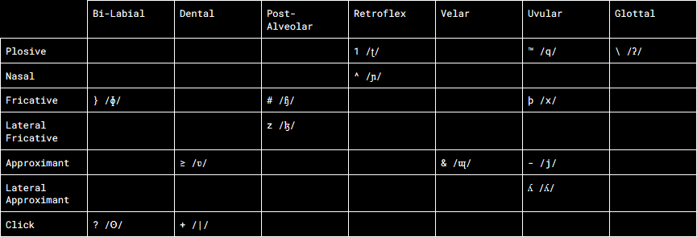
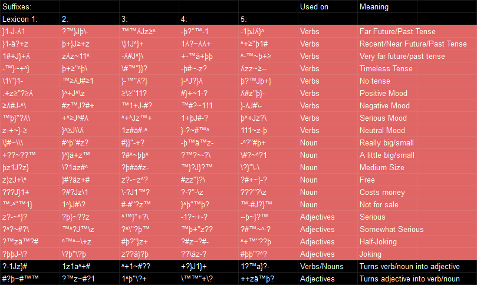
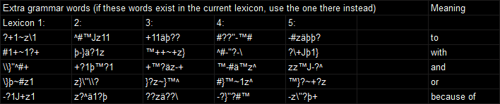

This is the instructional page for \ʎ^"™zþ\}#~\\\z}zJ+\^ }þ^ä-+\z?-~^}?. \ʎ^"™zþ\}#~\\\z}zJ+\^ }þ^ä-+\z?-~^}?, which can also be reffered to as "The Malbolge Conlang" is a constructed language with the intention of being extremely impractical to speak. The two main inspirations for The Malbolge Conlang are kay(f)bop(t) and Malbolge.
The consonants of The Malbolge Conlang is shown in the charts below (sounds are encased by slashes and notated using the IPA):
Additionally, the vowels of The Malbolge Conlang are: ä /ɜ/ J /ɤ/ ~ /y/ " /æ/ _ /ɐ/
The Malbolge Conlangs has 5 seperate lexicons. In order to choose which lexicon to use, first count how many words have appeared before the one you want to type and add 1 to that number. Then, take that number's corresponding fibonacci number, mod 5, and add 1. That new number is which number lexicon you should use. In words, the only allowed syllable structure is CCCVCCC. Nouns must end with 2 suffixes telling you the size of the object, and whether the object, is free, costs money, or is not for sale. Verbs must also end with 2 suffixes, telling tense and mood. Adjectives must end with a suffix telling you seriousness, and always follow nouns. Verbs and nouns can end with an optional suffix turning them into adjectives (this suffixes can also act as the posessive case). Adjectives can also optionally end with a suffix that turns them into nouns or verbs. These suffixes are shown here (red showing required suffixes):
The sentence structure depends on where the sentence is, following this pattern: SVO, OVS, SOV, OSV, VOS, VSO, OVS, VSO, OSV, OVS, SVO, OVS. After reaching the final sentence structure, simply start from the beginning again. All sentences end with the character "]", however questions may end with ")]". Additionally, there are a few extra grammar words, shown below:
The words for "to", "with", and "because of" all immediately follow the sentence, however the words for "and" and "or" may be used after any noun.
The 5 lexicons (links below) combined with the suffix & grammar word charts from this page make up the language's vocabulary. Each word (with the exception of the grammar words) has 5 seperate distinct meanings.
Links: Lexicon 1, Lexicon 2, Lexicon 3, Lexicon 4, Lexicon 5.
Currently, no texts have been translated into The Malbolge Conlang, mainly due to the difficulty of translating. However I do plan to translate something into this abomination in a few days.